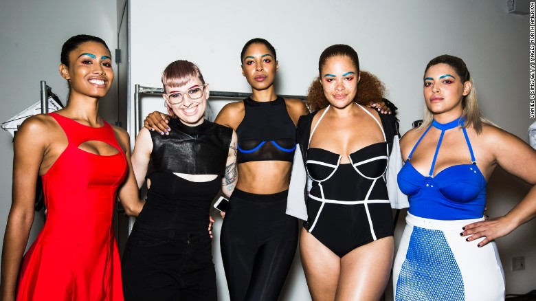

Why model Leomie Anderson is saying 'NO'
Lack of diversity is arguably one of the biggest issues facing the fashion industry.
British model Leomie Anderson is more vocal than most on the subject. WATCH: Around the world with Moschino's Jeremy Scott Earlier this year, during New York Fashion Week, she took to Twitter to voice her outrage on the subject when she was paired with an ill-equipped make-up artist who was unable to work with her skin tone.
She's by no means the first to speak out on the issue. Most recently Naomie Campbell, who set up the initiative Balance Diversity with activist Bethan Hardisson and ex-supermodel Iman, echoed Leomie's concerns in an interview with Teen Vogue: "When I was younger, I encountered this same issue. I would be backstage at shows and there would be stylists who didn't have any experience working with black models."